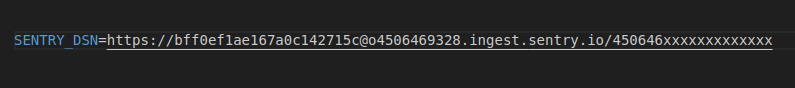
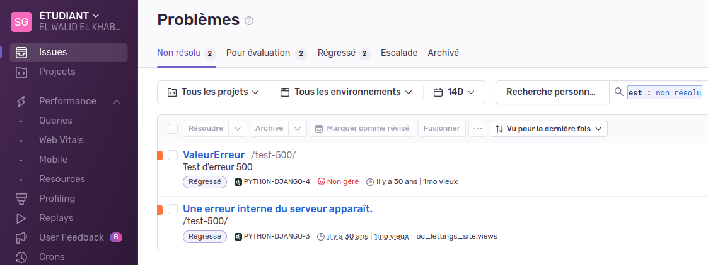
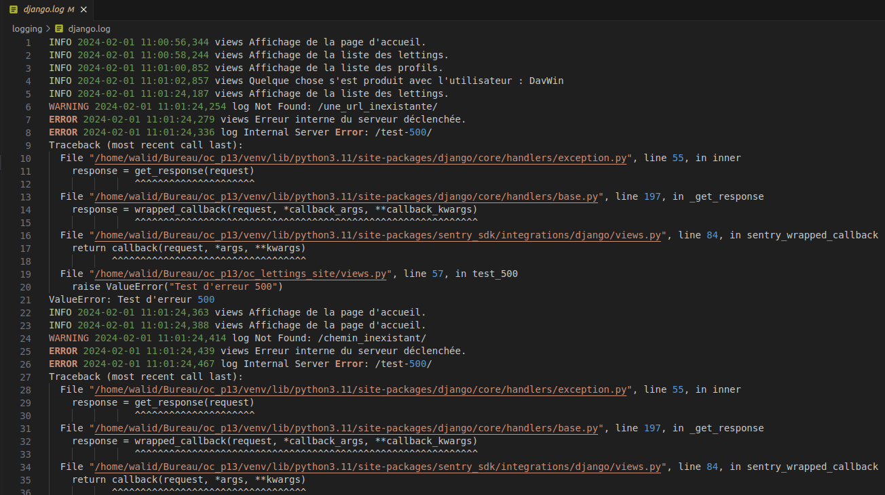

Surveillance Sentry et Logging
1. Surveillance du projet avec Sentry :
Sentry est une plateforme de gestion des erreurs en temps réel, conçue pour améliorer la qualité des applications en permettant aux développeurs de détecter, suivre et résoudre efficacement les problèmes qui surviennent dans les applications en production. Le principal atout de Sentry est sa capacité à fournir des informations détaillées sur les erreurs, y compris la pile des appels, l’environnement d’exécution et même l’état de l’application au moment où l’erreur s’est produite.
Cette plateforme est polyvalente et peut être intégrée à une multitude de langages de programmation et de frameworks, ce qui la rend extrêmement adaptable à divers environnements de développement.
Avec Sentry, les développeurs peuvent rapidement identifier non seulement où une erreur s’est produite, mais aussi pourquoi, ce qui facilite grandement le débogage et la résolution des problèmes.
Le déploiement de Sentry dans notre projet « Orange County Letting’s » se fait en plusieurs étapes clés.
1. Création d’un compte Sentry:
Tout d’abord, il est nécessaire de créer un compte Sentry et de configurer un nouveau projet dans l’interface Sentry.
Cette étape permet d’obtenir une clé DSN (Data Source Name) unique, qui sera utilisée pour connecter notre application à Sentry.
2. Intégration de Sentry dans notre projet:
Une fois que vous avez votre clé DSN, l’étape suivante consiste à intégrer Sentry dans votre projet. Cela implique généralement l’ajout de la bibliothèque Sentry correspondante à notre projet via un gestionnaire de paquets, puis la configuration de Sentry avec notre clé DSN. Dans le cas de projets Python, cela peut se faire en installant le SDK Sentry avec pip et en ajoutant quelques lignes de configuration dans votre code.
- Intégration de Sentry dans (settings.py)
Il faut commencer par éditer le fichier de configuration de notre projet (settings.py), existant dans l’application principale (oc_lettings_site).
# Initialise Sentry pour la surveillance des erreurs dans une application Django.
# Cette fonction configure Sentry, un service de suivi des erreurs, pour qu'il soit utilisé avec
# une application Django. Elle doit être appelée lors de l'initialisation de l'application pour
# assurer que les erreurs et les problèmes sont correctement enregistrés et envoyés à Sentry.
#
# Sentry aide à surveiller, à détecter et à réparer les erreurs en temps réel, en fournissant
# des détails contextuels et des insights sur les défaillances de l'application.
#
# Paramètres :
# dsn (str): La clé DSN (Data Source Name) fournie par Sentry. Cette clé est unique à chaque
# projet Sentry et est utilisée pour authentifier et diriger les données d'erreur
# vers le bon projet dans Sentry. La clé DSN doit être obtenue à partir du tableau de
# bord Sentry et doit être traitée comme une information sensible.
#
# Retourne :
# None
#
# Exemple :
# Pour initialiser Sentry dans une application Django, appelez cette fonction dans votre fichier
# settings.py :
#
# initialize_sentry()
#
# Remarque :
# - Il est important de garder la clé DSN confidentielle, car elle permet l'envoi de données à
# votre projet Sentry.
# - Vous pouvez ajuster la configuration supplémentaire pour contrôler ce qui est envoyé à
# Sentry, comme la capture des erreurs de niveau DEBUG ou INFO, selon les besoins de votre
# projet.
#
# Pour plus d'informations, visitez la documentation officielle de Sentry :
# https://docs.sentry.io/platforms/python/guides/django/
Voici le code que nous avons ajouté à la fin du fichier settings.py
import sentry_sdk
import os
sentry_sdk.init(
dsn=os.getenv(
"SENTRY_DSN", ""
), # Utilisez une valeur par défaut vide si la variable
# n'est pas définie
# Set traces_sample_rate to 1.0 to capture 100%
# of transactions for performance monitoring.
traces_sample_rate=1.0,
# Set profiles_sample_rate to 1.0 to profile 100%
# of sampled transactions.
# We recommend adjusting this value in production.
profiles_sample_rate=1.0,
)
Note
Quand nous commençons cette étape, nous devrions normalement insérer notre fameuse clé DSN dans ce fichier (settings.py), mais une fois l’intégration de Sentry marche bien, et pour des mesures de sécurité, et pour les bonnes pratiques du « coding : Ne jamais stocker les identifiants Sentry ou toute autre donnée sensible dans le code source (utilisez des variables d’environnement) », nous transférons donc cette clé depuis ce fichier pour la mettre dans un fichier de variables d’environnement : par exemple, le fichier (.env).
Voici un exemple fictif d’insertion de la clé DSN dans le fichier (.env) :
3. Provocation d’une erreur pour le test de Sentry:
Note
Après l’intégration de Sentry, il est important de tester son fonctionnement en générant volontairement des erreurs pour s’assurer que celles-ci sont correctement capturées et envoyées à Sentry. Cela implique également de personnaliser les paramètres de Sentry pour s’adapter aux besoins spécifiques de votre projet, comme la configuration des niveaux de journalisation, la définition des environnements (par exemple, développement, test, production) et l’ajout de métadonnées supplémentaires aux rapports d’erreurs pour améliorer leur contexte.
Apres avoir intégré Sentry dans le fichier settings.py, et après avoir mis et changé sa clé DSN dans une variable d’environnement (.env), il faut provoquer une erreur pour tester si mon code renvoie bien ce que nous attendons vers Sentry :
Dans notre cas pour ce projet, un de nos tests unitaires est le test_500_view: qui teste la réponse en cas d’erreur interne du serveur :
from django.test import TestCase
class ViewsTestCase(TestCase):
def test_500_view(self):
"""
Teste la gestion des erreurs 500.
Simule une requête provoquant une erreur interne du serveur pour vérifier si l'application
retourne correctement un code de statut 500 (Internal Server Error).
"""
with self.assertRaises(ValueError):
self.client.get("/test-500/")
Donc en résumé, si nous exécutons simplement ce test, nous devrions avoir un déclenchement d’erreur sur Sentry :
–
Agrandir et voir cette Image sur une autre plateforme–
Enfin, il est crucial d’adopter de bonnes pratiques pour gérer et répondre aux erreurs signalées. Cela inclut la priorisation des erreurs, l’analyse des tendances sur les erreurs récurrentes, et la mise en place d’un workflow efficace pour la résolution des problèmes, en tirant parti des fonctionnalités de collaboration et d’intégration de Sentry avec d’autres outils de développement.
En résumé, Sentry est un outil puissant qui, lorsqu’il est correctement déployé et utilisé, peut considérablement améliorer la stabilité et la fiabilité de nos applications. Son intégration dans notre projet nous permettra de gagner un temps précieux dans le processus de débogage et d’assurer une expérience utilisateur plus fluide et sans interruption.
2. Surveillance du projet avec Logging :
Le système de logging dans ce projet Django est conçu pour fournir une vue détaillée et configurable des événements qui se produisent lors de l’exécution de l’application.
Il permet de suivre le comportement de l’application, de diagnostiquer les problèmes et de collecter des informations analytiques.
Configuration de Base
La configuration du logging est définie dans le fichier settings.py. Nous utilisons un dictionnaire nommé LOGGING pour configurer les loggers, les handlers, les formatters et les niveaux de log.
Composants Clés
Loggers: Les loggers sont les points d’entrée du système de logging. Ils collectent les logs et les transmettent aux handlers. Dans notre configuration, nous avons des loggers pour Django lui-même, ainsi que pour les applications spécifiques du projet (lettings, profiles, et oc_lettings_site).
Handlers: Les handlers déterminent ce qu’il advient des logs une fois qu’ils sont collectés par un logger. Nous avons trois types de handlers :
Console: Envoie les logs à la sortie standard (utile pour le développement).
Sentry: Intégration avec Sentry pour la surveillance et la notification des erreurs en production.
File: Écrit les logs dans un fichier, ce qui est utile pour la conservation des données et les analyses ultérieures.
Formatters: Les formatters définissent le format d’affichage des logs. Notre formatter verbose inclut le niveau de log, l’horodatage, le module d’où provient le log, et le message.
Niveaux de Log: Chaque logger peut avoir son propre niveau de log (par exemple, INFO, WARNING, ERROR). Cela détermine la granularité des informations enregistrées.
Mise en Place du Fichier de Log Pour stocker les logs dans un fichier, nous avons configuré un FileHandler. Le fichier de log est situé dans un dossier logging à la racine du projet. Le script vérifie si ce dossier existe et le crée s’il n’est pas présent. Les logs sont écrits dans un fichier nommé django.log dans ce dossier.
Utilisation en Pratique Pour enregistrer un log, il suffit d’importer le module de logging de Python dans le fichier Python et de créer un logger au début de chaque fichier important :
import logging
logger = logging.getLogger(__name__)
# Utilisation dans votre code
logger.info("Message informatif")
logger.warning("Avertissement")
logger.error("Message d'erreur")
voici une capture d’ecran de notre fichier log existant dans le dossier (logger) à la racine du projet :
–
Agrandir et voir cette Image sur une autre plateforme–
En utilisant différentes méthodes (info, warning, error, etc.), vous pouvez enregistrer des logs de différents niveaux, qui seront traités selon la configuration définie dans settings.py.
Conclusion
Le système de logging est un outil puissant pour le suivi et le diagnostic de votre application Django. Il offre une flexibilité pour s’adapter à différents environnements et besoins, allant du développement à la production.